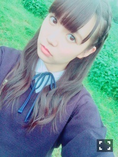

| 2016/02 15 Mon | ひめたん-0o0-その612 |
ハッピーバレンタイン！
あ、バレンタインっぽい写真が
一枚もない( ´ ･ω･ ` )へへ
ソニレコ最新回で
バレンタインみたいなことしてるので
そちらを是非観てみて下さい！
チャンネル登録はこちらから。
よろしくね！
2/11は
乃木坂46 紅白SP拡大版でした！
観てくれたかな？

アンダーライブ武道館の模様を
たっぷり流していただけて
なんとありがたい（ ; ; ）
全員センターを一気に紹介して下さったり
舞台裏のインタビューなど
普段はお見せしない顔をたくさん
お届けできたと思います。
玲香、若月、レポートありがとう！
ご覧いただいた通りたくさんのメンバーが
応援に来てくれてました！みんなありがと！
「大人への近道」の
スタジオライブもありました～♪
14th新制服解禁ー！
最近ヘアもいろいろやってます～
というか自分に何が一番似合うのか
わからなくなって迷走中です。笑
私は今日で制作終わったよ＼(^o^)／
今回もたくさんの出会いに感謝、そして
この作品を手に取ってくださる皆さんに
新たな私たちを見ていただけたら
嬉しいなと思っています！
お楽しみに。
日曜の夜はらじらー！サンデー
ゲストは乃木坂から
伊藤万理華ちゃんが来てくれます。
わーい＼(^o^)／
最近久々に丸一日万理華とお仕事してたら
何だか無性に甘えてきました。
しばらく会えてなくて寂しかったんだと。
可愛いかよ。
おたよりのテーマは
◯ずっコケた話
◯個性派回答対決
◯ひめたんクイズ
万理華への応援メッセージや
レギュラーコーナーへのおたよりも
お待ちしています！
おたよりの宛先はこちら。

バレンタインのスタジオ行きたかったなー！
でもでも、そんな21日は
乃木坂ちゃんバースデー前夜、
そして万理華ちゃんのお誕生日翌日！
ハタチかぁいいな～(´｡•ω•｡`)
～お知らせ～
2/24 Samurai ELO
2/29 ブブカ
最近いろんな撮影に
参加させていただいています！
日々刺激を受けています。
早くお知らせしたいな～o(^o^)o
情報解禁までもう少し
待ってて下さい！
ちょっとだけど質問返し！
 十代のうちに
十代のうちに
やりたいことってありますか？
それが、ひとつあったのですが
近々叶ってしまいそうです......。
また報告します～＊
ヒーリング音楽ってどんなのかしら？
α波っていうのが出てて
聴くだけでリラックスできる音楽らしい。
波の音とか、鳥の鳴き声とか色々あるけど
私はオルゴールにアレンジされた曲の
アルバムを聴いてる！
嫉妬の権利のPVの雨って
あれ人工的なやつなんですか？
ふふ、あの日は本当に天気が悪かったです。
ふふ、あの日は本当に天気が悪かったです。
撮影日が晴れてたらまた違った雰囲気の
MVになってたんでしょうね( ˇωˇ )

AXISの広告、新しいのが配られたんだね！
届いた方は
教えてくれてありがとう(´｡•ω•｡`)
以前、何度か撮影に
参加させていただいたのですが
乃木坂として活動していて
またこうしてお声がかかるなんて
本当に不思議な気持ち。
受験生の皆さん、
最後まで応援しています！
春はもうすぐそこ！

画像フォルダ見てて思ったの
笑顔の写真が少ないなって。笑
苦手なんだよね( ´ ･ω･ ` )
(＊´・ω・＊)
コメント(1149)
2016/02/15 23:36